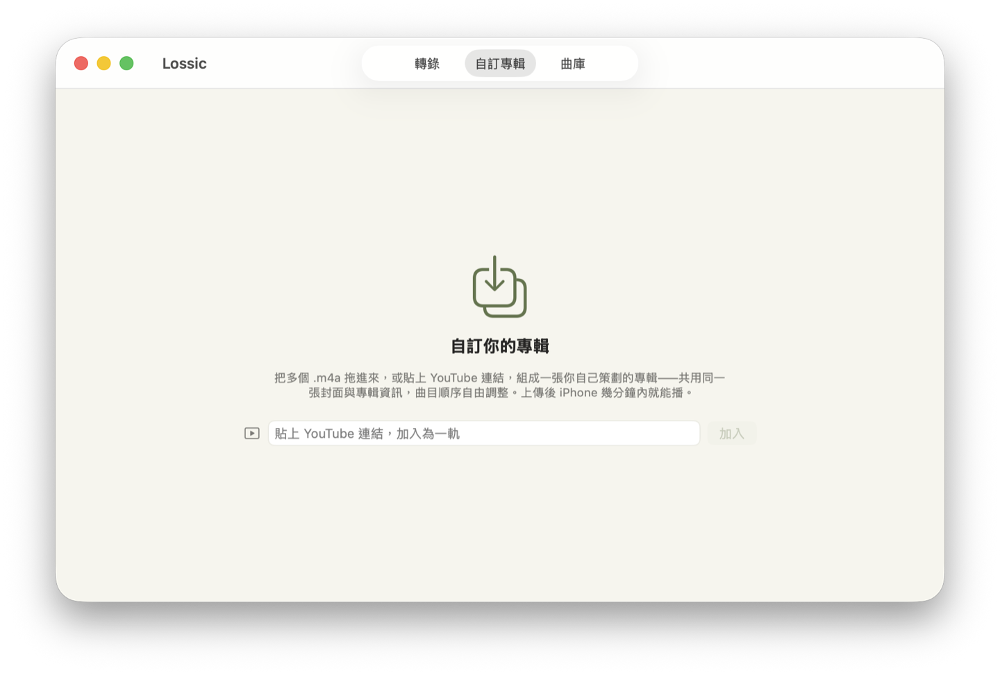

一張專輯，可以有一軌是 YouTube 嗎？——Build Your Own Album 與 0.3.0 背後的取捨
- 「自訂專輯」改名為 Build Your Own Album（介面上仍是「自訂專輯」）。它現在可以貼一個 YouTube 連結進來，變成專輯裡的一軌，和你的 .m4a 並列、同一張封面、同一個順序。
- 可以從曲庫回頭編輯一張自訂專輯：拖拉排序、改曲名、加減曲目、換封面，然後儲存；也可以把整張專輯移到 Drive 垃圾桶。既有的音檔不會被重新上傳。
- 讓這件事成為可能的，是
manifest.json從「分享用的附註」升格為專輯本身：Mac 與 iPhone 現在都先讀它，順序、曲名、每軌格式都以它為準。 - YouTube 軌走 YouTube 官方的嵌入播放器，我們不下載、不抽音軌、不快取影片，播放器永遠可見。代價是：app 進背景它就停，鎖屏也控制不了。這個斷點我們直說。
- Bilibili 我們做通了，也在同一晚拿掉——因為要讓它「像我們的播放器」，得做兩件對方明顯不希望的事。

這版多了什麼
三件事。第一，在自訂專輯裡貼一個 YouTube 連結，它就成為一軌——標題、頻道名和縮圖會自動帶進來，可以改，可以拖到任何位置。第二，曲庫裡的自訂專輯滑過去會出現一支鉛筆，按下去回到自訂專輯分頁繼續編輯：排序、曲名、增刪、封面，存檔後曲庫和 iPhone 都會跟上；右鍵則可以把整張專輯移到 Google Drive 垃圾桶（30 天內可還原）。第三，iPhone 端讀的是同一份資料，所以 Mac 上排好的順序、寫好的曲名，手機上就是那樣。
一個無損播放器為什麼要放 YouTube
我們自己也問了這個問題。Lossic 的出發點是「你買下的音樂，值得比檔案管理器更好的家」——一切都圍著無損檔案轉，格式徽章寫的是 16/44.1、24/96。YouTube 是 128 kbps 的 AAC，放進來不是自打嘴巴嗎？
答案來自我們自己怎麼收藏。當我們很喜歡某一場音樂表演、某一場演講、某一段對談，喜歡的東西裡，除了自己有使用權的檔案之外，很多其實來自 YouTube：一場沒發行過的現場、一段訪談、一支 MV、一集有影像的 podcast。它們不是要取代唱片，但它們和唱片屬於同一個主題、同一種心情——那一年迷上的那位鋼琴家、那個讓你反覆重看的講者。難道一張專輯就只能是音樂，不能包含 YouTube 影像，讓整張專輯變成一個更多元的收藏嗎？
以前的做法是兩個 app 切來切去，或者用 yt-dlp 把聲音抽出來變成一個「假的」無損檔——後者不僅品質沒有變好，還把一個明明有影像的東西砍掉了影像。所以 0.3.0 的立場是：專輯是你策劃的，來源不必一致。無損檔照樣是無損檔，徽章照樣誠實；YouTube 那一軌就標成 YouTube，播的時候給你看影片。我們不假裝它是別的東西，也不假裝一個收藏只該有一種形狀。
manifest 從「附註」變成「本體」
上一篇介紹的 manifest.json，當時只是分享時的側車：讓收件人全選一個資料夾匯入時，能還原專輯名、順序和封面，而不是從檔名猜。專輯本身仍然是「資料夾裡的那些音檔」——同步的時候列出檔案、按檔名排序、讀第一個檔的檔頭認格式。
YouTube 軌把這個模型戳破了：它根本沒有檔案。要讓它存在，manifest 必須從描述變成定義。於是 0.3.0 把同步反過來：資料夾裡有 manifest 就以它為準——順序是它寫的順序、曲名是它寫的曲名、每軌的編碼／取樣率／位深／時長也記在裡面，手機不必再抓檔頭去猜；沒有 manifest 的舊資料夾（早期的轉錄）才退回原本的檔名法。
這一改，「編輯專輯」才變得便宜。既有的音檔連一個位元組都不用動——順序、曲名本來就活在 manifest 裡，改了就重寫那個幾 KB 的檔案，原地覆蓋。新加的 .m4a 照舊寫 tag 上傳，移掉的檔案進垃圾桶而不是刪除。只有一種情況會碰既有檔案：你明確替某一軌換了封面，因為封面是內嵌在檔案裡的、手機的 Now Playing 讀的就是它。
界線先講清楚：我們不下載 YouTube
YouTube 軌只用 YouTube 官方的嵌入播放器（IFrame Player API）。Lossic 不下載、不抽取、不轉檔、不快取任何影音；存下來的只有公開的影片 ID 和你改過的標題，放在你自己 Drive 的 manifest 裡。影片播放時，播放器一定看得見——這是 YouTube 的條款，也是我們願意接受的界線。
代價要一起講。這一軌不是背景音樂：app 一進背景，影片就停；鎖屏上看得到標題和進度，但按播放沒有用。當一張專輯裡 .m4a 和 YouTube 交錯，聽的體驗會在那一軌斷一下——你得把手機拿起來。我們沒有辦法把這個斷點藏起來，所以選擇把它寫在這裡，而不是等你發現。
影片擁有者關閉嵌入的話，播放器裡會出現 YouTube 自己的說明，那一軌就是播不了。我們不繞過。
做了又拿掉的 Bilibili
既然 YouTube 可以，Bilibili 呢？我們花了一個晚上做通它：官方的外鏈播放器在 Mac 上能播，我們甚至能控制播放、暫停、跳轉、播完接下一軌。技術上，它比 YouTube 更聽話。
然後在 iPhone 上，它給了我們一段「無法播放」的影片。查下去才知道，Bilibili 的外鏈播放器刻意不服務行動瀏覽器——偵測到手機就回錯誤片。要在手機上播，得把瀏覽器身分偽裝成桌面 Safari。而要讓它「看起來像我們的播放器」，還得用 CSS 把它的 logo、標題、「進入哔哩哔哩」的連結全部藏掉。
兩件事都做得到，兩件事都是對方明確不希望發生的。「做得到」和「該不該做」是兩個問題；App Store 審查也不會替我們回答第二個。於是同一個晚上，我們把 Bilibili 整個拿掉，程式碼裡只留了一段註解記錄為什麼。0.3.0 的範圍是：.m4a 加 YouTube，就這樣。
Own Album 這個名字
「自訂專輯」在英文版原本叫 Custom。這版改成 Build Your Own Album——「Build」比「Make」好，因為它說的是「用零件組起來」，正是這個功能在做的事。BYOA 這個縮寫我們留給行銷文案用，介面上一律用全名，中文維持「自訂專輯」；一個四個字母的縮寫塞在分頁上，對日文、韓文使用者什麼都沒說。
順便記一個小插曲：iPhone 收藏頁的篩選器多了幾個字，我們把它加寬了 50 點，結果旁邊「43 albums collected」被擠成一個字一行的直排。修法很無趣——篩選器自己佔一行。但它提醒我們，改一個名字從來不只是改一個字串。
兩個實測才知道的坑（給同行的）
YouTube 嵌入頁的 origin 必須是你真正擁有的 https 網域。 我們把 IFrame Player 放在一個自己寫的空白頁裡。用 about:blank 當 origin，YouTube 回 error 153（缺 referer）；照舊教學宣稱自己是 youtube.com，回 error 152。改成 https://lossic.app，三秒內就 ready 並開始播放。這兩個錯誤碼在文件裡都找不到解釋，只能靠量測。
同一支影片放進兩張專輯，整個收藏消失了一晚。 我們的曲目表以 Drive 檔案 ID 當唯一主鍵，過去從沒出過事——Drive 的 ID 是全球唯一的。但 YouTube 軌的 ID 是影片 ID，同一支影片不管放進哪張專輯都一樣；第二張專輯寫入時撞了主鍵，整筆同步交易回滾，收藏頁空空如也。修法是把主鍵改成「專輯 + 曲目」的組合，並且寫了一個「同一支影片在兩張專輯」的測試，先重現、再修。這是一個一直正確的假設，在來源變多的那一刻失效的例子。
接下來
- iPhone 端目前只能播，不能編輯自訂專輯。建立與編輯留在 Mac，責任邊界比較乾淨；但排序這件事，手機上做其實更順手，我們在想。
- YouTube 軌的時長要等第一次播放才知道（YouTube 的公開 oEmbed 不給時長），在那之前清單上是一條橫線。
- 含 YouTube 軌的專輯分享給朋友，照上一篇的流程可以，manifest 會把那一軌帶過去；但收件人的體驗我們還沒仔細打磨。
狀態：Lossic 0.3.0（Mac）已在 Mac App Store 上架；iPhone 端對應的更新正在準備。本文描述的是已上線的行為，以及做決定時的依據。
你買下的音樂，值得比檔案管理器更好的家。